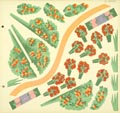

14. Alexandra Exter. Mon jardin: Quatre carrés à planter, huit planches à découper, plans et catalogue [My Garden: Four Plots to Plant, Eight Plates to Cut Out, Plans and Catalogue] (Album jeuets du Père Castor) Paris: Flammarion, 1936.
A friend of Exter said, "In her hands, a simple paper lampshade became a work of art." That gift is reflected in Mon jardin, which was intended for children from six up to fourteen.
14a. The plan for an orchard, with a path, bench, pear and apple trees, and masses of roses, geraniums, phlox, gladiolas, and hydrangeas.
14b. The "plants" that will grow in the orchard.